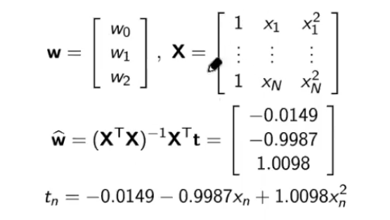
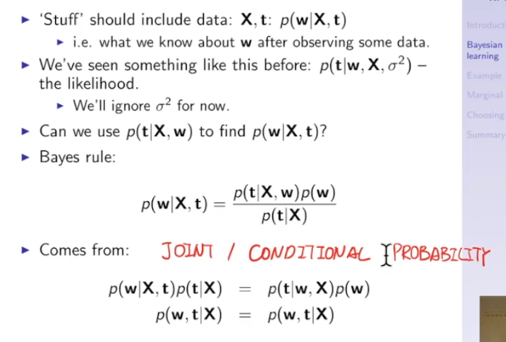
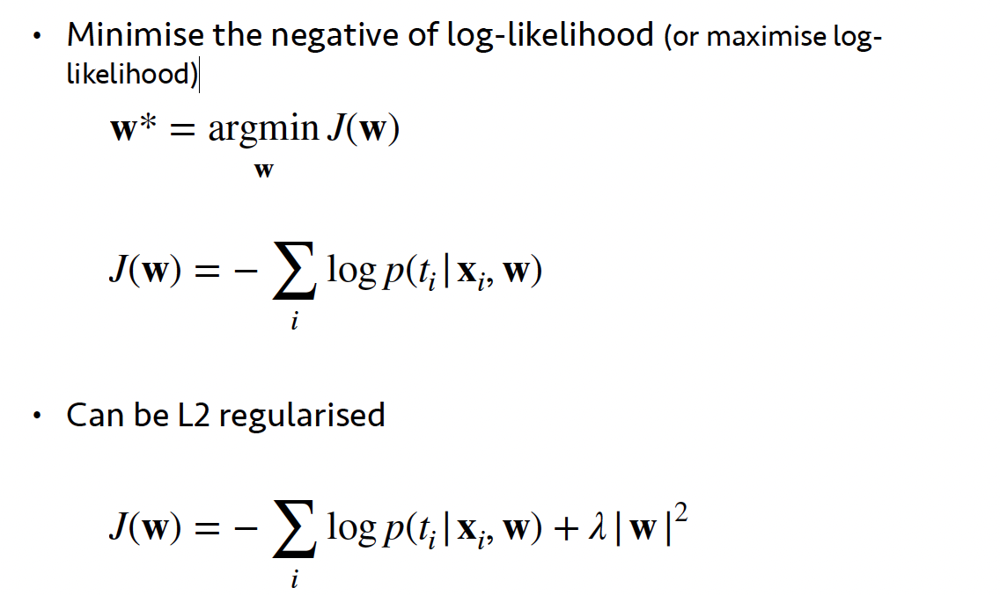
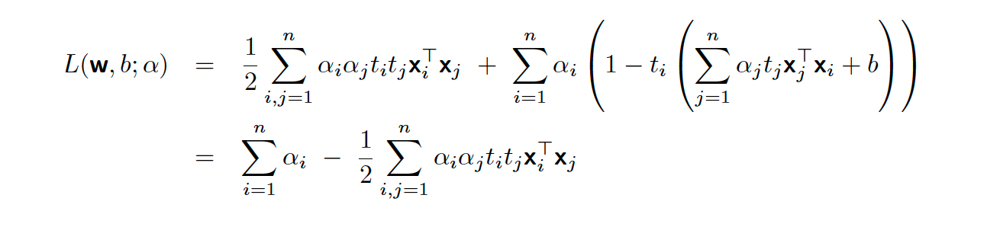
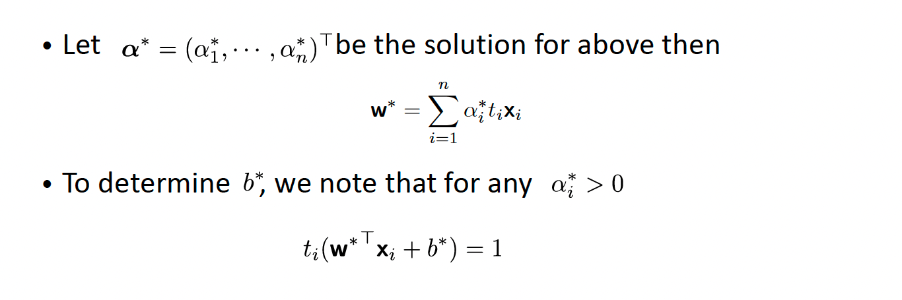
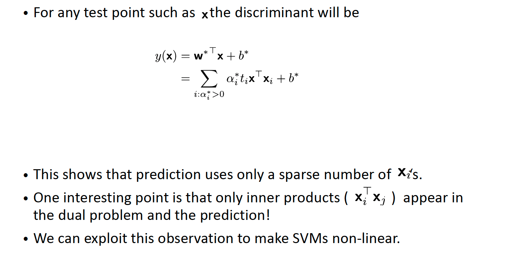
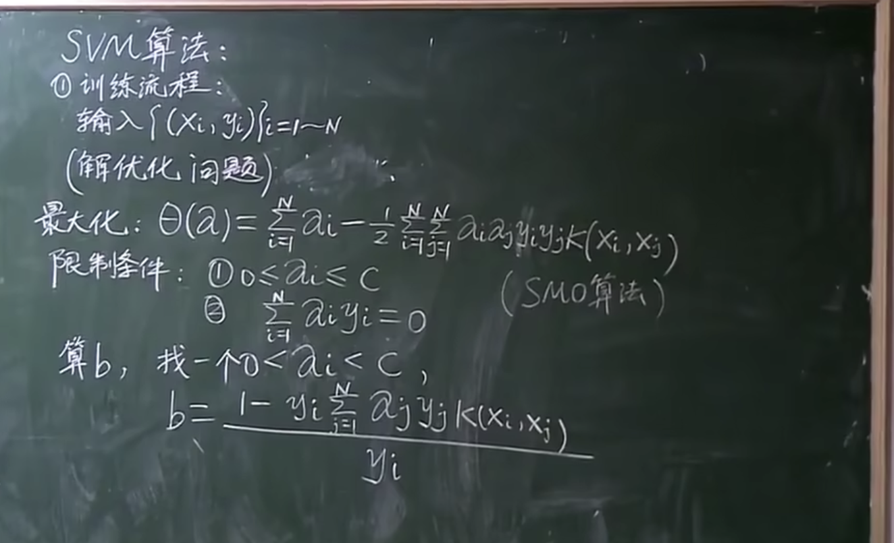

$t=f(x)=w_0 +w_1x$
$L_n = (t_n - f(x_n;w_0;w_1))^2$
Average loss function $L = \frac{1}{N}\sum_{n=1}^N{(t_n - f(x_n;w_0;w_1))}^2$

Trying to find gradient of our average square loss. $\frac{\partial L(w_0,w_1)}{\partial w_0}$ and $\frac{\partial L(w_0,w_1)}{\partial w_1}$
we're tring to do is to decrease the gradient to find a strategy that allow us to push to find the combinations in $w_0$ and $w_1$ that allow us to push the greed both greetings to 0. $\alpha$ is the learning rate.
我们要做的就是降低梯度，找到一种策略，让我们能够推动找到 $w_0$ 和 $w_1$ 中的组合，让我们能够把贪婪的两个问候都推到 0。
Let's fit a model with an analytical solution to the problem of finding the parameters with the minimum average loss.
Recall that the average loss is $$ L(w_0, w_1) = \frac{1}{N}\sum_{n=1}^N (t_n - w_0 - w_1x_n)^2 $$ $L$ is a function of $w_0$ and $w_1$. All $x_n$ and $t_n$ are given.
The procedure to find the analytical expression of the optimal parameters is the following:


xbar = sum(x)/len(x)
tbar = sum(y)/len(y)
xxbar = np.sum(np.dot(x,x))/len(x)
xtbar = np.sum(np.dot(x,y))/len(x)
w1 = (xbar * tbar - xtbar) / (xbar * xbar - xxbar)
w0 = tbar - w1 * xbar


*过拟合风险（Risk of Overfitting）:高阶多项式容易导致过拟合，特别是在数据点较少时。
在多项式拟合的环境中，RBF（径向基函数）和Sigmoid函数的使用略有不同，它们不像在机器学习模型中那样直接作为激活或核函数。在这种情况下，这两个函数的角色更多的是提供一种替代的函数形式，以增强多项式拟合的能力。以下是它们在多项式拟合中的作用：
在多项式拟合中，RBF可以用作一种特殊的基函数。与传统的多项式基（如x, x², x³等）不同，RBF基函数关注数据点与某个中心点的距离。 使用RBF可以帮助在复杂数据集上进行更灵活的拟合。特别是当数据表现出局部性质时（例如，在某些区域有不同的趋势），RBF能够更好地捕捉这些特征。The use of RBF can help in more flexible fitting on complex datasets. Especially when the data exhibits localised properties (e.g. different trends in certain regions), RBF can better capture these features.
Use less centers or add small value to the diagonal of X^TX, using regularization [2].
使用lesscenters 或在 X^TX 对角线上添加小值，使用正则化[2]。
Sigmoid函数在纯粹的多项式拟合中不常见。然而，如果在某些上下文中使用，它可以提供一种平滑的、有界的非线性形式。 在某些特定情况下，比如需要限制输出范围时，Sigmoid函数可能被用于变换数据，使其适合用多项式方法进行拟合。In some specific cases, such as when there is a need to limit the output range, the Sigmoid function may be used to transform the data to make it suitable for fitting by polynomial methods.
在多项式拟合中，通常重点在于选择合适的多项式阶数以避免过拟合或欠拟合。RBF和Sigmoid函数在这个过程中可能不是主流选择，但它们可以在特定情况下提供有价值的替代方案，特别是在处理非线性复杂数据时。
交叉验证（Cross-validation）是一种统计方法，用于评估机器学习模型在独立数据集上的性能。它主要用于防止模型过拟合，确保模型具有良好的泛化能力。
Cross-validation is a statistical method used to evaluate the performance of machine learning models on independent datasets. It is primarily used to prevent model overfitting and ensure good generalization capability of the model.
在交叉验证过程中，数据集被分为几个部分。在这些部分中，一部分被用作训练数据，而另一部分被用作测试数据。这个过程重复进行多次，每次选择不同的部分作为测试集，其余部分作为训练集。最后，这些测试结果被平均或以其他方式合并，以估计模型的整体性能。
During the cross-validation process, the dataset is divided into several parts. In these parts, some are used as training data while others are used as test data. This process is repeated multiple times, each time choosing a different part as the test set and the rest as the training set. Finally, these test results are averaged or combined in other ways to estimate the overall performance of the model.
常见的交叉验证方法包括k折交叉验证（k-fold cross-validation），其中数据集被分为k个大小相等的子集；以及留一交叉验证（leave-one-out cross-validation），适用于小数据集，每次留下一个数据点作为测试集。
Common cross-validation methods include k-fold cross-validation, where the dataset is divided into k equal-sized subsets, and leave-one-out cross-validation, which is suitable for small datasets, leaving out one data point at a time as the test set.

Posterior density: $p(w|X,t)$
likelihood: $p(t|X,w)$
Prior density:$p(w)$
Marginal likelihood:$p(t|X)$
Figure 2A: Lasso [1], the fitted line misses many data points between 1990-2010,suggesting some weights of basis functions using these centres are pushed to zero[1]. Out of the three fitting methods, only Lasso with strong regularization can dothis [1].
Figure 2B: Ridge regression [1]: the model ignores some extreme data points on theleft [1], suggesting weights controlling the corresponding basis functions are verysmall [1].
Figure 2C: Linear regression [1]: the model fits most of the data points very well,especially fitting the data points between 1950 and 1970 perfectly [1], suggesting alarge number of basis functions actively contribute to the fitted model [1].
Figure 2A: Ridge regression [1]: the model ignores many densely populated data points on the left and points that could lead to bigger bends, suggesting weights controlling the corresponding basis functions are very small [1].
Figure 2B: Linear regression [1]: the model fits the densely populated data points on the left and the rest of the data very well, especially fits the two data points on the very right perfectly, suggesting large number of basis functions actively contribute the fitted model [1].
Figure 2C: Lasso [1], the fitted line is straight line parallel to the x-axis, suggesting all weights of the basis functions are zero. Out of the three fitting method, only lasso with very strong regularization can do this [1].
In regression, the target variable is a continuous/real-valued variable [1]. In classification, the target variable is a discrete/binary/categorical variable [1]. To obtain a classification problem from regression, one can cluster/group the continuous/real-valued variable into groups [1].
在回归中，目标变量是连续/实值变量 [1]。在分类中，目标变量是离散/二元/分类变量[1]。要从回归中获得分类问题，可以将连续/实值变量聚类/分组 [1]。
Simple idea: Label a new sample the same as its closest data point

We use an activation function to make the classifier more robust to the outliers： $$y(x) = \sigma(w_0+w^Tx) ~~~~~~ x\gets[1,x]^T ~~ w\gets[w_0,w]^T$$ $$\sigma(z) = \frac{1}{1+e^{-z}}$$ $$y(x) = \sigma(w^Tx) = \frac{1}{1+e^{-w^Tx}}$$
Logistic regression outputs can be interpreted as posterior class probabilities: $$P(t=1|x,w) = y(x) = \sigma(w^Tx) = \frac{1}{1+e^{-w^Tx}}$$ $$P(t=0|x,w) = 1 - P(t=1|x,w) $$
Likelihood for individual label: $$p(t_i=1|x_i,w) = \sigma(w^Tx_i)$$ $$p(t_i=0|x_i,w) = 1 - \sigma(w^Tx_i)$$ Combining: $$L(x,w) = \prod{p(t_i=1|x_i,w)p(t_i=0|x_i,w)}$$ $$L(x,w) = \prod_{i=0}{[\sigma(w^Tx_i)^{t_i}][1-\sigma(w^Tx_i)^{1-t_i}]}$$ log-likelihood: $$logL(x,w) = t_ilog[\sigma(w^Tx_i)] + (1-t_i)log[1-\sigma(w^Tx_i)]$$
Cost function: 
ovr：把一类作为正例，其他全部作为反例
ovr: treat one class as positive examples and all others as negative examples
L1、L2正则化都可以使用，都能够提高模型泛化性能。Both L1 and L2 regularisation can be used and both can improve the model generalisation performance.
敏感度衡量的是模型识别实际正类样本的能力。Sensitivity measures the ability of the model to identify actual positive class samples. $$S_e = \frac{TP}{TP+FN}$$ 特异性衡量的是模型识别实际负类样本的能力。Specificity measures the ability of the model to recognise actual negative class samples. $$S_p = \frac{TN}{TN+FP}$$
敏感度（Sensitivity）和特异性（Specificity）是评估分类模型性能的重要指标，它们分别衡量了模型识别正类和负类的能力。准确度（Accuracy）则是模型正确预测的总体比例。虽然这些指标很有用，但它们各自都有局限性，特别是在处理不平衡数据集时。这就是为什么提出接收者操作特征曲线（ROC）和曲线下面积（AUC）的原因。
Sensitivity and Specificity are important metrics for assessing the performance of a classification model, and they measure the model's ability to identify positive and negative classes, respectively. Accuracy, on the other hand, is the overall percentage of correct predictions made by the model. While these metrics are useful, they each have limitations, especially when dealing with unbalanced datasets. This is why the receiver operating characteristic curve (ROC) and area under the curve (AUC) are proposed.
F1分数是精确度（Precision）和召回率（Recall）的调和平均值，它被提出是为了在这两个指标之间提供一个平衡。当我们需要同时考虑精确度和召回率时，F1分数是一个有用的指标。 $$F1 = 2 \times \frac{S_p \times S_e}{S_p + S_e} = \frac{2}{S_e^{-1}+S_p^{-1}}$$ F1分数的提出主要是因为在某些情况下，只关注精确度或召回率是不够的。例如，在一个不平衡的数据集中，一个模型可能通过简单地预测多数类来获得高精确度，但这个模型对于少数类的预测可能很差。同样地，一个模型可能有很高的召回率，因为它几乎将所有样本都标记为正类，但这会导致很多负类样本被错误分类。F1分数通过组合这两个指标，给出了一个更全面的模型性能评价。
The F1 score is the reconciled average of Precision and Recall, and it is proposed to provide a balance between these two metrics. The F1 score is a useful metric when we need to consider both Precision and Recall.
The F1 score is proposed mainly because in some cases, focusing only on precision or recall is not enough. For example, in an unbalanced dataset, a model may have high precision by simply predicting the majority class, but the model may be a poor predictor of the minority class. Similarly, a model may have high recall because it labels almost all samples as positive classes, but this can lead to many negative class samples being misclassified.The F1 score gives a more comprehensive evaluation of model performance by combining these two metrics.
支持向量机（SVM）是一种在机器学习和统计分类领域广泛使用的监督学习模型。它旨在通过找到一个最佳超平面来分类不同的数据点。SVM的核心思想是尽可能地在类别之间创建最大的边缘。这个超平面的目的是分割不同的类别，并尽可能增大与每个类别中最近的数据点（即支持向量）之间的距离。
Support Vector Machine (SVM) is a supervised learning model widely used in the field of machine learning and statistical classification. It aims to classify different data points by finding an optimal hyperplane.The core idea of SVM is to create the largest possible edges between categories. The purpose of this hyperplane is to segment the different categories and increase the distance to the nearest data point (i.e., support vector) in each category as much as possible.
训练数据及标签 $$(X_1,y_1),(X_2,y_2)...(X_N,X_N) ~~~ X=\begin{bmatrix} x_{11}\x_{12}\ \vdots \x_{1m} \end{bmatrix}$$
线性模型 $$(w,b) ~~~ W^T+b=0 ~~~~ W=\begin{bmatrix} w_{1}\w_{2}\ \vdots \w_{m} \end{bmatrix}$$
训练集线性可分 ${(x_i,y_i)}_{i=1\sim N} $ $$\exist(w,b), 使：任意的i=1\sim N$$ $$有 若y_i=1，则W^TX_i + b \ge 0 $$ $$若y_i=-1，则W^TX_i + b < 0$$
若 $y_i = [-1,1]$ 则可以写为 $y_i[W^TX_i + b] \ge 0$

最小化(minimize):
$$ \frac{1}{2} \left | W \right | ^ 2 + C \sum_{i=1}^N \xi_i ~~~~~~ $$
其中 $ \sum_{i=1}^N \xi_i$ 是正则项(Regulation)
$ \xi_i$ 是松弛变量(Slack Variable)
限制条件 $y_i[W^T\phi(x_i) + b] \ge 1-\xi_i ~~~~ (i=1 \sim N) ~~~ \xi_i \ge 0$
我们可以不知道无限维映射$\phi(x)$的显式表达，但我们只需要知道一个核函数(kernel function) $$K(x_1,x_2) = \phi(x_1)^T \phi(x_2)$$ 则上述的限制条件依旧可解
高斯核 $K(x_1,x_2) = e^{-\frac{\left | x_1 - x_2 \right | ^ 2}{2\sigma^2}} = \phi(x_1)^T \phi(x_2)$
多项式核 $K(x_1,x_2) = {(x_1^Tx_2)}^d = \phi(x_1)^T \phi(x_2)$
sigmod核 $K(x_1,x_2) = tanh(\beta x_1^Tx_2 + \theta)= \phi(x_1)^T \phi(x_2) ~~~~ \beta>0 , ~~ \theta < 0$
处理约束优化问题：SVM的优化问题是一个有约束的优化问题。这意味着我们不仅要找到最优解，还要满足一定的约束条件。KKT条件提供了一种强大的方法来处理这类有约束的优化问题，它结合了拉格朗日乘子法和满足约束条件的必要条件。
简化问题求解：原始的SVM优化问题是一个凸二次规划问题，直接求解可能在计算上非常复杂，尤其是在特征维数较高时。通过转换为对偶问题，我们可以将原始问题转换为一个更易于求解的形式。对偶问题通常有更少的变量，特别是在处理大规模数据集时，这种转换可以显著减少计算成本。
Handling constrained optimisation problems: The optimisation problem of SVM is a constrained optimisation problem. This means that not only do we have to find the optimal solution, but we also have to satisfy certain constraints. the KKT condition provides a powerful way to deal with this type of constrained optimisation problem, combining the Lagrange multiplier method with the necessary conditions to satisfy the constraints.
Simplified problem solving: the original SVM optimisation problem is a convex quadratic programming problem, which can be computationally complex to solve directly, especially when the feature dimensions are high. By converting to a dyadic problem, we can transform the original problem into a more tractable form. Dyadic problems typically have fewer variables, especially when dealing with large-scale datasets, and this conversion can significantly reduce the computational cost.
引入kkt条件后整个表达为 $$\L(w,b,\alpha) = \frac{1}{2} \left | w \right | ^ 2 + \sum_i^N \alpha_i (1 - y_i(w^Tx_i + b)) \ \alpha_i>0 \alpha=(\alpha_1 ... \alpha_n)^T ~~~~\ (1 - y_i(w^Tx_i + b)) \le 0 \ \alpha_i (1 - y_i(w^Tx_i + b))=0 $$
线性求解：
对偶问题：    
K-means是一种广泛使用的聚类算法，其目的是将数据点分组成K个集群。该算法简单且易于实现，适用于各种数据聚类问题。
分子$\sum_{n=1}^{N} Z_{nk} x_n$ 这部分计算的是簇k中所有数据点$x_n$的加权和。由于$Z_{nk}$要么是 0 要么是 1，所以只有当$x_n$属于簇k 时，它才会被加入到和中。
分母$\sum_{n=1}^{N} Z_{nk}$这部分计算的是簇k中数据点的数量。将分子除以分母，我们得到的$\mu_k$是簇k 中所有点的坐标的平均值，即新的簇中心。这样做是为了将簇中心移动到其所代表的所有点的中心位置，从而在下一次迭代中更好地代表这个簇。
在K-means算法中，使用核函数（Kernel）是对算法的一种扩展，使其能够进行非线性聚类。这种方法通常被称为“Kernel K-means”。它利用核技巧映射数据到一个高维特征空间，以便在这个空间中执行线性聚类，同时实际上并不需要显式地计算映射后的数据点。这允许算法找到原始输入空间中的非线性边界。In the K-means algorithm, the use of a kernel is an extension of the algorithm to allow for nonlinear clustering. This method is often referred to as "Kernel K-means". It uses the kernel trick to map the data to a high-dimensional feature space in order to perform linear clustering in this space, without actually having to explicitly compute the mapped data points. This allows the algorithm to find nonlinear boundaries in the original input space.
Kernel K-means的工作原理是用核函数代替原始数据点之间的欧氏距离计算。核函数可以测量原始输入空间中数据点之间的相似度。最常用的核函数包括多项式核、径向基函数（RBF或高斯核）和Sigmoid核。Kernel K-means works by replacing the calculation of Euclidean distances between the original data points with a kernel function. The kernel function measures the similarity between data points in the original input space. The most commonly used kernel functions include polynomial kernel, radial basis function (RBF or Gaussian kernel) and Sigmoid kernel.
在Kernel K-means中，我们不直接计算新的簇中心k，因为在映射后的高维空间中直接计算质心可能是不切实际的。相反，我们使用核函数来间接评估点之间的关系。这种方法的一个挑战是更新步骤不再像简单的K-means那样直观，因为我们不能简单地计算映射后的点的均值。In Kernel K-means, we do not directly compute the new cluster centre k, as it may be impractical to compute the centre of mass directly in the mapped high-dimensional space. Instead, we use the kernel function to indirectly evaluate the relationship between points. A challenge with this approach is that the update step is no longer as intuitive as in simple K-means, since we cannot simply compute the mean of the mapped points.
$$d_{nk} = (x_n - \mu_k)^T(x_n - \mu_k) ~~~~~~~~ \mu_k = \frac{\sum_{n=1}^{N} Z_{nk} x_n}{\sum_{n=1}^{N} Z_{nk}} ~~~ N_k = \sum_n Z_{nk}$$ 展开: $$x_n^T x_n - \frac{2}{N_k} \sum_{m=1}^{N} z_{mk} x_m^T x_n + \frac{1}{N_k^2} \sum_{m,l=1}^{N} z_{mk} z_{lk} x_m^T x_l$$ 使用$k(x_n,x_n)$代替$x_n$ $$ k(x_n, x_n) - \frac{2}{N_k} \sum_{m=1}^{N} z_{mk} k(x_n, x_m) + \frac{1}{N_k^2} \sum_{m,l=1}^{N} z_{mk} z_{lk} k(x_m, x_l) $$
$$f(X) = \frac{1}{\sigma \sqrt{2\pi}} e ^{-\frac{1}{2} (\frac{X-\mu}{\sigma})^2} ~~~ p(X|\mu,\sigma)～N(\mu,\sigma)$$ 另一种表达形式： $$p(\mathbf{x} | \mu, \Sigma) = \frac{1}{(2\pi)^{n/2}|\Sigma|^{1/2}} e^{-\frac{1}{2}(\mathbf{x}-\mu)^T \Sigma^{-1} (\mathbf{x}-\mu)}$$
几何角度：加权平均（多个高斯分布叠加而成）$\alpha_k$ 权重=概率值 $$p(x) = \sum_{k=1}^K \alpha_k N(x|\mu_k,\Sigma_k), ~~ \sum_{k_n}^k\alpha_k = 1$$
x: observed variable
z: latent variable 隐变量 对于的样本x是属于哪一个高斯分布； 离散的随机变量；
$\begin{array}{cccc}
z& C_1 & C_2 & \cdots & C_K \
\hline
p(\theta) & p_1 & p_2 & \cdots & p_k \
\end{array}$ $~~~~~~~~\sum_{k=1}^{K} p_k = 1$
$$p(x) = \sum_{k=1}^k p_k N(x|\mu_k,\Sigma_k)$$
X：observed data $X = (x_1,x_2,...,x_n)$
(X,Z):complete data
$\theta = {p_1,p_2,...,p_k,~ \mu_1,\mu_2,...,\mu_k ~ \Sigma_1,\Sigma_2,...,\Sigma_k}$
极大似然估计:
$$^{\theta}{MLE} = \argmax{\theta} \log P(X) = \argmax \sum_{i=1}^N\log P(x_i)$$
直接用极大似然估计无法求出解析解，所以引入了EM算法。
EM算法主要有两个步骤：E步（Expectation step）和M步（Maximization step） E步：根据当前参数的估计值来计算潜在变量的期望值。对于GMM来说，这涉及到计算每个数据点属于每个高斯分布的概率这一步是通过$p(z_i = C_k |x_i, \theta^{(t)})$来进行的。
M步：根据E步中计算出的期望来更新参数的估计值。对于GMM，这包括更新每个高斯分布的均值、协方差矩阵和混合权重。这是通过最大化$Q(\theta,\theta^{(t)})$函数来实现的。
EM: $$p(x,z) = p(z)p(x|z) = p_z N(x|\mu_z,\Sigma_z) $$ $$p(z|x) = \frac{p(x,z)}{p(x)} = \frac{p_z N(x|\mu_z,\Sigma_z)}{\sum_{k=1}^k p_k N(x|\mu_k,\Sigma_k)}$$ $$Q(\theta,\theta^{(t)}) = \sum_{i=1}^N\sum_{z_i}\log p(x_i,z_i|\theta)p(z_i｜x_i,\theta^{(t)}) \ = \sum_{i=1}^N\sum_{z_i}\log p_z N(x|\mu_z,\Sigma_z) \frac{p_z^{(t)} N(x|\mu_z^{(t)},\Sigma_z^{(t)})}{\sum_{k=1}^k p_k^{(t)} N(x|\mu_k^{(t)},\Sigma_k^{(t)})}$$ $$=\sum_{k=1}^K \sum_{i=1}^N [\log p_k + \log N(x_i|\mu_k,\Sigma_k)] p(z_i = C_k |x_i, \theta^{(t)})$$
求$p_k^{(t+1)}$: $$p_k^{(t+1)} = \argmax_{p_k} \sum_{k=1}^K \sum_{i=1}^N [\log p_k + \log N(x_i|\mu_k,\Sigma_k)] p(z_i = C_k |x_i, \theta^{(t)}) ~~~ S.t. \sum_{k=1}^K p_k = 1$$